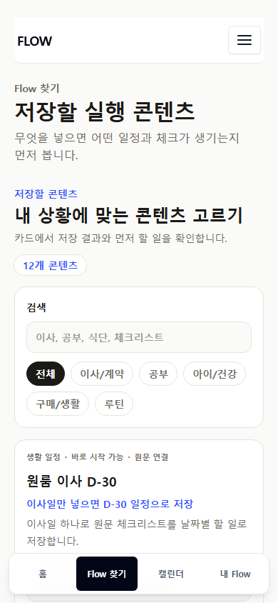
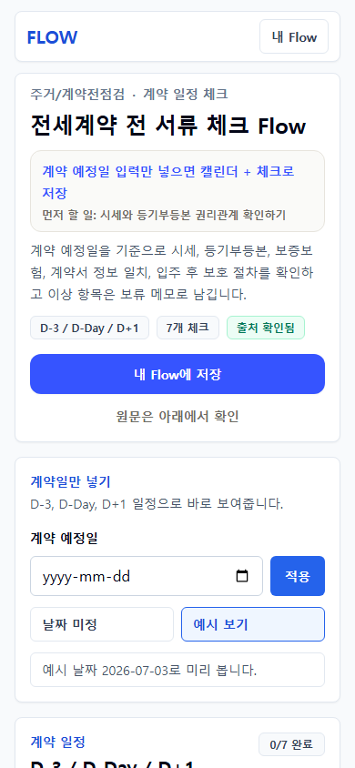
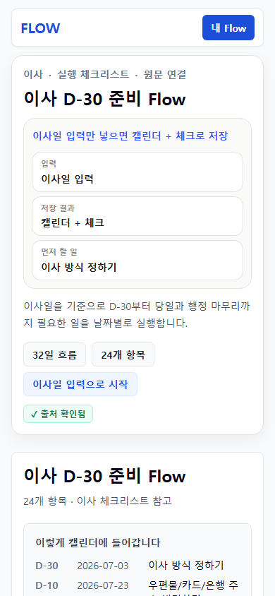
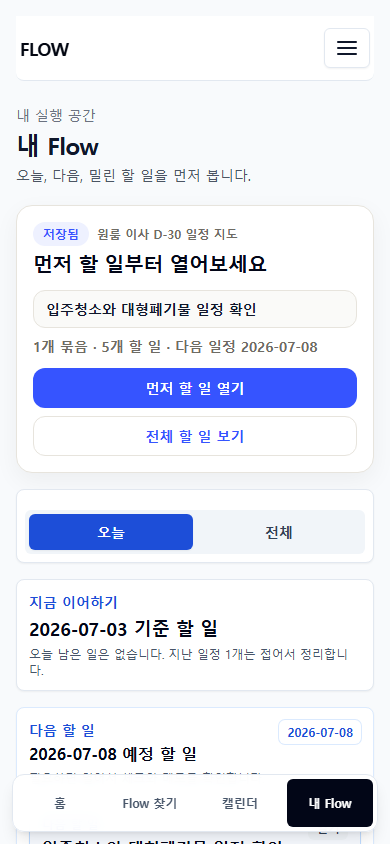

FlowMe UX/UI 2차 개선 검토 패키지
Flow를 찾고, 저장하고, 첫 할 일을 여는 경험 검토
Vercel 링크 접속이 어려운 상황을 대비해 실제 390px 모바일 화면을 첨부합니다. 이 패키지는 디자인 검토용이며, 구현 검증은 별도 로컬 자동 테스트로 통과했습니다.
모바일 390px
Flow 찾기
공개 Flow 상세
저장 후 My Flow
Export 라벨
서비스 전제
FlowMe는 설명형 콘텐츠 사이트가 아니라, 콘텐츠를 일정/체크/시트/메모로 저장하고 실행하는 앱입니다.
4탭 IA는 유지합니다: 홈 / Flow 찾기 / 캘린더 / 내 Flow.
사용자는 Flow/Step/Item 같은 내부 모델을 몰라도 써야 합니다.
원문/source/detail/memo는 필요할 때 확인 가능해야 하지만 첫 화면을 방해하면 안 됩니다.
이번 개선 내용
/flows카드의 badge와 metadata를 줄이고, 제목 -> 입력/결과 -> 먼저 할 일 -> CTA 위계로 정리했습니다./f/[slug]상단에 입력값, 저장 결과, 먼저 할 일을 추가했습니다.- source 영역은 "원문과 근거" 접힘 구조로 낮췄습니다.
- 저장 후 My Flow는 "저장됨" 상태보다 첫 할 일을 먼저 보이게 했습니다.
- export 라벨을 "캘린더 파일 받기 / 시트로 받기 / 메모로 복사"처럼 결과 중심으로 맞췄습니다.
검토 요청
- 현재 화면이 상용 실행 앱처럼 보이는지 평가해주세요.
- 여전히 설명형/기획서형으로 보이는 부분을 찾아주세요.
- 카드 정보량이 아직 많은지, 더 줄이거나 접어야 할 항목을 제안해주세요.
- 공개 Flow 상세 상단에서 "무엇을 넣으면 무엇이 생기는지"가 충분히 보이는지 봐주세요.
- 저장 후 My Flow에서 첫 사용자가 다음 행동을 바로 이해하는지 봐주세요.
- Blocking / High / Medium / Low로 나누고, 문제 / 이유 / 수정 방향 / 기대 효과를 적어주세요.
모바일 화면



